TFT — aktivní matrice a tranzistor u každého pixelu.
TN / IPS / VA — tři filozofie LC vrstvy.
MiniLED, QLED — evoluce podsvícení.
3. Emisivní displeje a dotyk
OLED — organický polovodič, dokonalá černá.
microLED — anorganická LED v každém pixelu.
Dotykové obrazovky — odporové a kapacitní.
Srovnání — co se hodí kam.
1897
CRT
1950s
split-flap
1959
VFD
1964
plazma
1971
TN LCD
1987
OLED
1996
IPS
2000
microLED
Základy
Jak displej funguje
Displej převádí elektrický signál na viditelný
obraz. Základní jednotkou je pixel — obvykle trojice subpixelů
R, G,
B. Jejich aditivním mícháním vzniká celá barevná škála.
Tři základní principy
Emisivní — pixel sám vydává světlo: CRT, plazma, LED, OLED, microLED.
Transmisivní — pixel jen propouští nebo blokuje světlo z podsvícení: LCD.
Reflexivní — pixel odráží okolní světlo: elektronický papír.
U transmisivních a reflexivních technologií je světelný zdroj oddělený od
pixelu.
pixel = R+G+B | jas, kontrast, barva, čas
Pixel = skupina subpixelů;PPI se proto u různých matic může lišit.
Základy
Klíčové parametry displeje
Stejná čísla znamenají u různých technologií něco jiného — proto se vyplatí vědět,
co přesně měří.
Rozlišení
Full HD → 8K
počet pixelů; PPI = hustota na palec
Obnovovací frekvence
60 – 240 Hz
e-paper klidně < 1 Hz
Odezva
0,1–20 ms
LCD vs. OLED vs. CRT
Kontrast
1000 : 1 → ∞
LCD vs. emisivní panely
Jas
250 – 1000+ nitů
HDR vyžaduje vysoký jas
Barevný gamut
sRGB / DCI-P3 / Rec. 2020
rozsah reprodukovatelných barev
Pozorovací úhly
160 – 178°
změna barvy a kontrastu mimo osu
Spotřeba a životnost
µW → stovky W
e-paper vs. plazma; burn-in
Pozor na marketing:„dynamický kontrast 1 000 000:1“ je často jen lokální
stmívání podsvícení, ne skutečný statický kontrast panelu. Podobně „efektivní PPI“ u OLED
závisí na subpixelové matici.
Nit:Nit (značka nt) je jednotka jasu, která vyjadřuje množství
světla vyzařovaného z plochy jednoho čtverečního metru (1 nt = 1 cd/m²).
Historie
Časová osa
Od objevu k prvnímu LCD
1888Friedrich Reinitzer — tekuté krystaly
1897Karl Ferdinand Braun — katodová trubice
1907H. J. Round — první pozorování elektroluminiscence
1927Oleg Losev — nezávisle LED
1920skomerční CRT přístroje; 1930s televizní vysílání
1950ssplit-flap / Solari tabule
1959VFD — vakuový fluorescenční displej
1964plazmový displej (Bitzer, Slottow, Willson)
1968první funkční LCD (RCA)
Od TN k microLED
1971TN efekt — Schadt a Helfrich
1973první LCD kalkulačka (Sharp)
1983STN — Scheffer a Nehring
1987praktický OLED — Tang a VanSlyke
1992první barevná plazma (Fujitsu)
1996IPS — Hitachi
1997E Ink — elektronický papír
2000výzkum microLED (Texas Tech)
2007Amazon Kindle
2010sOLED smartphony, QLED televize
2020smicroLED a QD-OLED
Není to lineární příběh.Technologie se překrývají, vracejí a často dlouho žijí
paralelně — CRT přežil první LCD o desítky let a plazma zmizela dřív než OLED.
CRT • 1897
Katodová trubice (CRT)
Cathode Ray Tube
1897 — Karl Ferdinand Braun sestrojil katodovou trubici pro osciloskop.
1920s – 30s — první komerční přístroje a televizní vysílání; CRT vládne
až do nástupu LCD.
Použití: televize, monitory, osciloskopy, radary.
Není to „plochý panel“ — je to velká vakuová elektronka.
Barevná verze: tři elektronová děla a stínící maska.
elektronové dělo → vychylovací cívky → luminofor → světlo
Přirozené zobrazení mnoha rozlišení — analogový signál se přizpůsobí.
Interlace i progresivní režim — volba podle obsahu.
Výborná černá a podání barev; žádné podsvícení.
Vysoké obnovovací frekvence a velmi nízká latence.
Ve své době levná a zralá technologie.
Nevýhody
Těžké a hluboké — hloubka roste s úhlopříčkou.
Vypalování statického obrazu do luminoforu.
Vysoké napětí — X-ray záření, teplo, riziko úrazu.
Citlivost na magnetické pole — deformace obrazu.
Geometrické zkreslení, konvergence, blikání při 50 Hz.
Proč CRT zmizel:LCD nabídl plochý tvar, nižší spotřebu a postupně i vyšší
rozlišení. CRT přežil jen tam, kde záleželo na latenci a věrném černém podání — například
u profesionálních monitorů a retro her.
CRT • Maska
Různé typy masek
Barevná CRT používá tři luminofory (R, G, B). Maska
zajišťuje, že každý paprsek dopadne jen na ten správný.
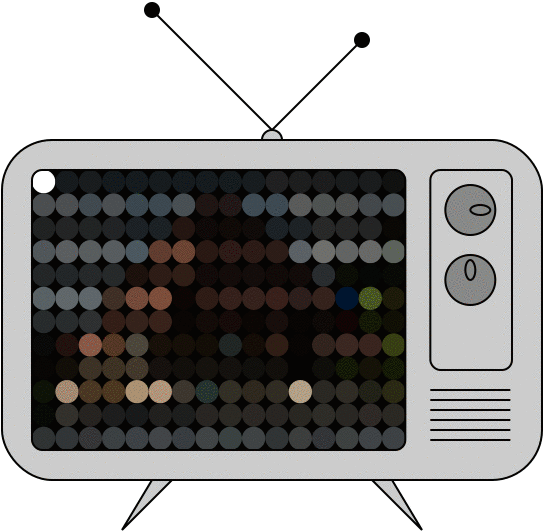
Shadow mask — děrovaný plech,
trojice R/G/B
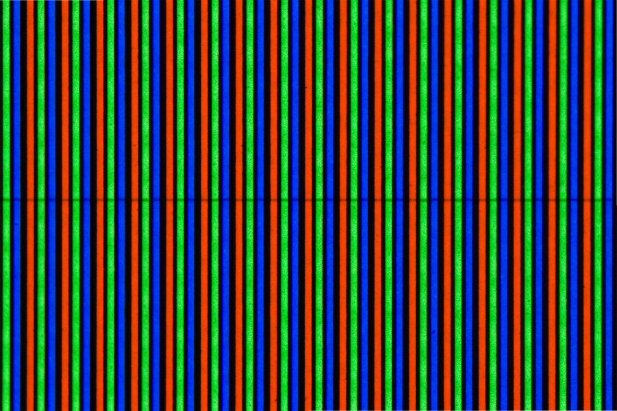
Aperture grille — vertikální
dráty (Trinitron)
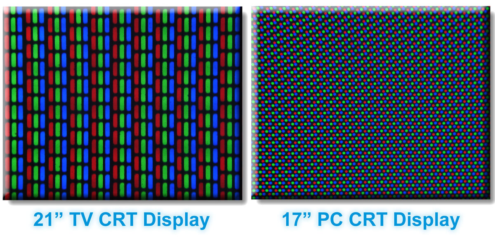
Slot mask — kombinace;
srovnání TV a monitoru
Kompromis:vyšší jas → hrubší maska; jemnější maska → nižší jas a
riziko moiré. Dot pitch se pohyboval kolem 0,25–0,28 mm.
3 paprskykonvergencedot pitch 0,25–0,28 mmmoiré
LED • 1927
LED — Light-Emitting Diode
Elektroluminiscence PN přechodu
1907 — H. J. Round pozoruje elektroluminiscenci; 1927 —
Oleg Losev publikuje nezávisle.
Komerčně od 60. let (červená); modrá LED až 1993
(Shuji Nakamura, GaN).
Průchod proudu PN přechodem → rekombinace elektronů a děr → fotony.
10× účinnější než žárovka, životnost desítky tisíc hodin, velmi rychlé spínání.
Indikace, podsvícení, osvětlení — a základ microLED.
e− + h+ → foton | λ = hc / Eg
Modrá LED + žlutý luminofor = bílé světlo; Nobelova cena 2014 (Akasaki, Amano, Nakamura).
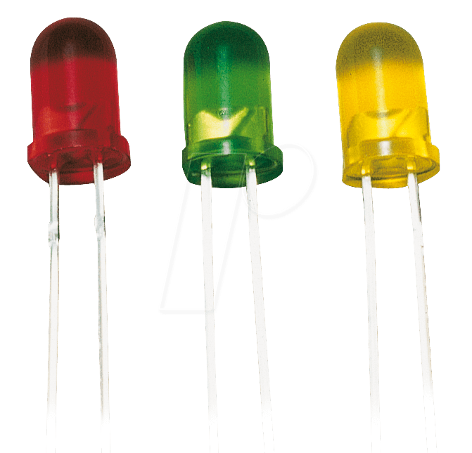
LED diody — R, G, Y
Schéma: anoda → katoda
Zkratky, sloučeniny a vzorec
LED — Light-Emitting Diode
PN — přechod P/N
GaAs — arsenid gallitý (IR)
GaP — fosfid gallitý (zelená)
GaN — nitrid gallitý (modrá)
InGaN — nitrid gallitý a inditý (modrá)
AlGaInP — fosfid hlinitý, gallitý a inditý (červená)
e− / h+ — elektron / díra
λ = vlnová délka, h = Planckova konstanta, c = rychlost světla,
Eg = šířka zakázaného pásu
Elektromechanika • 1950s
Solari board / split-flap
Tabule, která klape
Elektromechanická tabule — každý znak je otočný segment s polepy.
1950s — Solari di Udine; varianty split-flap (klapky)
a flip-dot (tečky).
ČR a SR: Pragotron.
Charakteristický zvuk, vysoká spotřeba, mechanické opotřebení.
Dodnes na nádražích, letištích a v muzeích.
Postupně nahrazeno LCD a e-ink panely — nostalgie ale zůstává.
1959 — princip blízký CRT: vakuová baňka, katoda (vlákno), mřížka a
anoda s luminoforem.
Elektrony dopadají na luminofor na anodě — anoda je ta, která svítí.
Mnohem menší profil a nižší spotřeba než CRT; segmenty lze tvarovat.
Rádia, videorekordéry, kalkulačky, palubní desky automobilů.
Funguje i při nízkých teplotách; typicky zelený nebo modrý jas.
Vytlačeno LCD; starší červené luminofory obsahovaly kadmium.
VFD je vlastně miniaturní vakuová elektronka, která svítí.
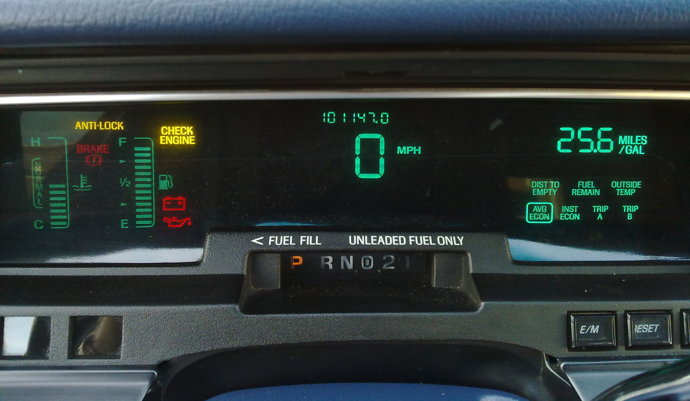
VFD palubní deska — typický zelený jas
Plazma • 1964
Monochromatická plazma
První velký plochý displej
1964 — University of Illinois (Donald Bitzer, H. Gene Slottow,
Robert Willson).
Plazma = ionizovaný plyn; buňky s neonem a xenonem.
Elektrický výboj emituje UV záření, které excituje luminofor.
Monochromatická oranžová; použito v terminálech PLATO.
Menší rozlišení, ale velké úhlopříčky; vypalování a vyšší spotřeba.
Ukázala, že velký plochý displej je fyzikálně možný.
výboj v Ne/Xe → UV → luminofor → viditelné světlo
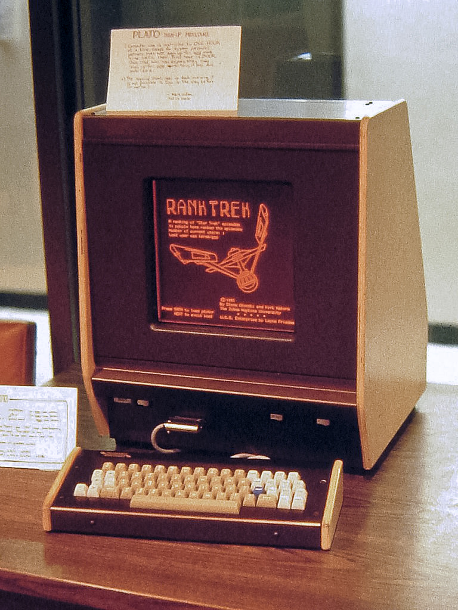
PLATO terminál — oranžová plazma
Kuriozita • 1960s
Stroboskopický displej
Obraz, který vzniká v čase
1960s — mechanický rotor s číslicemi a záblesk neonové lampy.
V jednu chvíli je vidět jen jedna číslice; oko si z rychlých záblesků složí obraz.
Použití hlavně v sovětských kalkulačkách (např. Elektronika).
Nutné mechanické části → hlučnost, opotřebení, poruchovost.
Velká čísla a málo součástek; dnes už jen kuriozita.
Stroboskopický efekt: obraz nevzniká v prostoru, ale v čase.
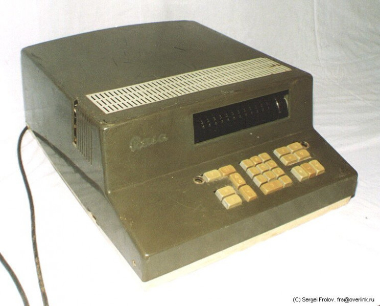
Sovětská kalkulačka — rotor a záblesk
LCD • 1888 / 1971
Twisted-nematic LCD (TN)
První tekuté krystaly
1888 — Friedrich Reinitzer objevuje tekuté krystaly (cholesteryl benzoát).
1968 — první funkční LCD (RCA).
1971 — TN efekt (Wolfgang Helfrich a Martin Schadt).
1973 — první LCD kalkulačka (Sharp).
Monochromatické segmentové displeje; spotřeba v řádu µW.
Nižší obnovovací frekvence, citlivost na teplotu; nástup v 70.–80. letech.
Tekuté krystaly nejsou ani pevné, ani kapalné — mají uspořádání kapaliny
a optiku krystalu.
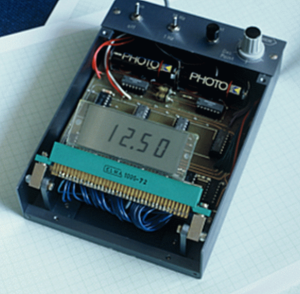
LCD kalkulačka — segmentový TN displej
LCD • Princip
TN LCD — princip
Dva zkřížené polarizátory; bez LC vrstvy by světlo neprošlo.
Molekuly LC se zkroutí o 90° a stočí rovinu polarizace.
Polarizované světlo projde druhým polarizátorem → světlý pixel.
Přiložení napětí → molekuly se narovnají, polarizace se nezmění.
Druhý polarizátor světlo zablokuje → černý pixel.
bez napětí = světlo projde | napětí = černá
LCD sám nesvítí — potřebuje podsvícení, nebo odráží okolní světlo.
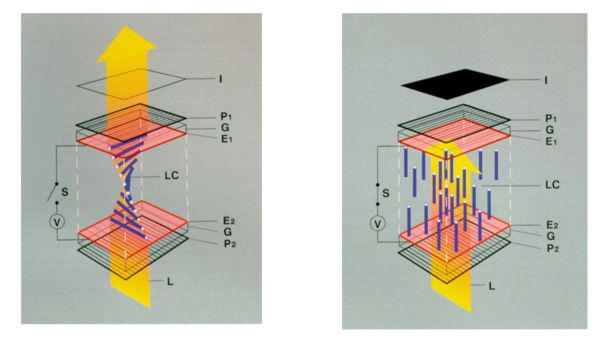
TN LC: vlevo bez napětí (světlo projde), vpravo pod napětím (černá)
LCD • 1983
Super-twisted nematic (STN)
Větší zkrut, lepší kontrast
1983 — Terry Scheffer a Dietrich Nehring.
Zkrut molekul 180°–270° místo 90°.
Vyšší kontrast a lepší multiplexing → více řádků, vyšší hustota.
Pasivní matrice; lze vyrobit čistě reflexivní (bez podsvícení).
Nintendo Game Boy (1989) — nejslavnější STN.
Pomalejší odezva, horší pozorovací úhly; barevné CSTN s filtry.
Vytlačeno TFT, ale princip přežívá v segmentových displejích.
STN = Super-Twisted Nematic
E-paper • 1970s
Elektronický papír
Bistabilní displej
1970s — elektroforéza; E Ink 1997; Kindle 2007.
Mikrokapsle: bílé kladně nabité a černé záporně nabité
částice v kapalině.
Elektrické pole částice přesune → pixel světlý nebo tmavý.
Bistabilní: energii spotřebuje jen při změně obrazu.
Reflexivní — čitelný na přímém slunci, žádné podsvícení.
Pomalé překreslování, převážně šedotón; barevné varianty (Kaleido, Gallery).
Čtečky, cenovky, signage, štítky.
Mirasol nebyl e-paper, ale reflexivní MEMS displej — často se to plete.
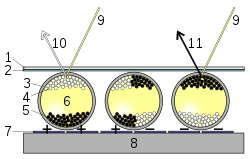
Mikrokapsle: bílé (+) a černé (−) částice v kapalině
Polarita elektrod rozhoduje, která strana částic se objeví u povrchu — a tedy jaký
odstín pixel ukáže.
EL • 1970s
Elektroluminiscenční displej
Tenkovrstvá elektroluminiscence
1970s — tenkovrstvý EL displej.
Luminofor ZnS:Mn (sulfid zinečnatý dotovaný manganem) mezi dvěma
elektrodami.
Monochromatický — žluto-oranžový (ZnS:Mn) nebo modrozelený (ZnS:Cu).
Velmi široký rozsah teplot −60 až +105 °C.
Až 100 000 hodin bez vypálení; nízká spotřeba.
Hodinky, palubní desky, vojenské a průmyslové aplikace.
Omezené barvy a rozlišení; vytlačeno LCD.
EL panel je pevnolátkový — žádná vakuová baňka, žádné plynové výboje.
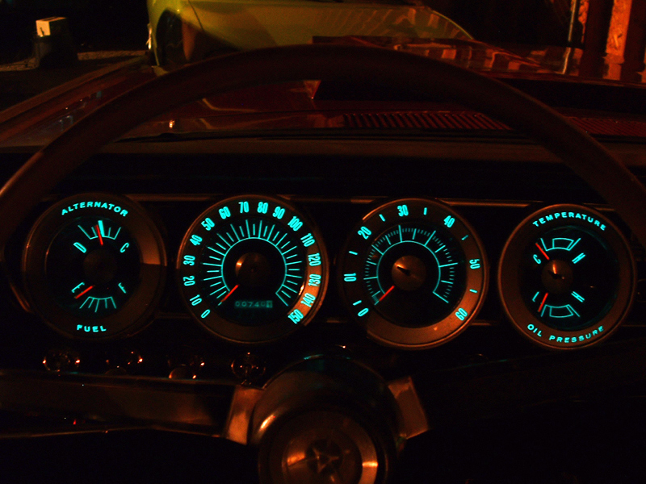
EL palubní deska — typický modrozelený jas
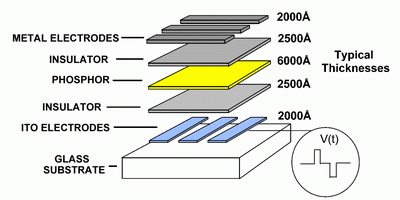
Princip
Plazma • 1992
Barevná plazma (PDP)
Král velkých televizí
1992 — první barevná plazma (Fujitsu); vrchol v 2000s.
Buňka = mikrovýboj v Ne/Xe → UV → RGB luminofor.
Velké úhlopříčky 42–65", tenký profil, živé barvy.
Velmi dobrá černá, vysoký kontrast, 600 Hz subfield drive.
Vypalování, nižší životnost, vysoká spotřeba a hmotnost.
Výroba ukončena kolem 2014 (Panasonic, Samsung).
Plazma byla králem domácího kina, ale LCD a OLED ji vytlačily.
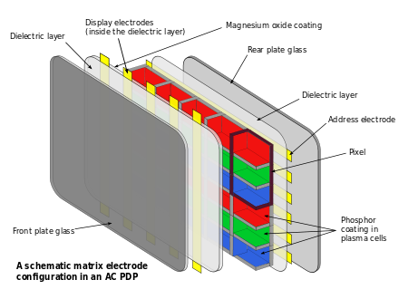
PDP — adresní a zobrazovací elektrody, RGB luminofor
TFT • 1990s
TFT LCD — aktivní matrice
Transistor u každého pixelu
Aktivní matrice: každý pixel má vlastní tenkovrstvý tranzistor (TFT).
TFT = Thin Film Transistor; vodivá vrstva z amorfního křemíku
(a-Si) na skle.
Tranzistor funguje jako spínač; kondenzátor drží náboj mezi obnovami.
Lepší adresovatelnost → vyšší rozlišení, kontrast, méně přeslechů.
Řádkové a sloupcové elektrody; multiplexní adresace.
Dnes standard; varianty TN, IPS, VA.
1 pixel = 1 TFT + 1 kondenzátor + 1 LC buňka
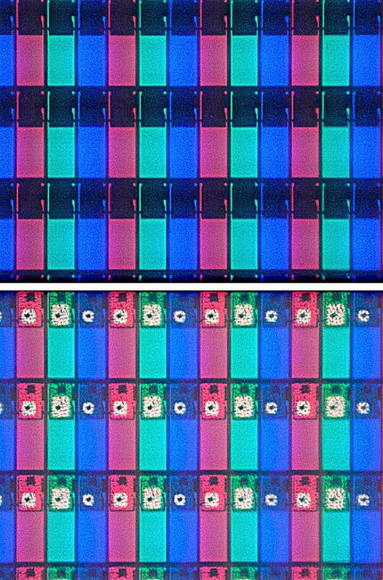
Subpixely TFT LCD pod mikroskopem
Pozor:TFT není typ LC vrstvy — je to spínač. O tom, jak se
krystaly natáčejí, rozhoduje TN, IPS nebo VA.
TFT • Adresace
Jak probíhá adresace matice
Radič otevře řádkovou linku (gate) → sepnou se všechny TFT v řádku.
Na datové linky (source) se zároveň přivedou napětí pro celý řádek.
Otevřené tranzistory nabijí kondenzátory → nastaví se LC buňky.
Řádek se uzavře, kondenzátor drží náboj; radič jde na další řádek.
Po posledním řádku se cyklus opakuje → obnovovací frekvence.
1080 řádků × 60 snímků/s ≈ 65 tis. řádků/s
Datová linka je společná pro všechny řádky — proto je jeden radič na
sloupec, ne na pixel.
Multiplexní adresace — vždy jen jeden řádek je otevřený
TFT • Aktivní vs. pasivní
Proč aktivní matice porazila pasivní
Pasivní matice (STN, DSTN)
Napětí se přivádí přímo na průsečík řádek × sloupec.
Přes sousední buňky teče zbytkový proud → přeslechy (crosstalk).
Výsledek: rozmazání a duchy (ghosting), omezený počet řádků.
Nutná strmá prahová křivka → proto STN a DSTN, ale pomalejší a horší úhly.
Dnes jen kalkulačky, měřáky a panely s nízkým rozlišením.
Aktivní matice (TFT)
Tranzistor po zápisu pixel elektricky odpojí od datové linky.
Kondenzátor drží přesné napětí po celý snímek.
Žádné přeslechy → plný kontrast a ostré hrany.
Rychlé přepisování, věrné barvy, miliony pixelů.
Standard pro monitory, telefony i televize.
Práhový problém:pasivní matice musí vybrat řádek tak, aby sousední
buňky zůstaly pod prahem rozsvícení. TFT tento kompromis nepotřebuje — pixel je po zápisu
prostě odpojený.
crosstalkghostingpoloviční výběrstorage capacitor
TFT • TN
Druhy TFT LCD — TN
Twisted nematic
Nejstarší a nejlevnější varianta TFT.
Bez napětí jsou krystaly zkroucené → světlo prochází (normally white).
Pod napětím se zarovnají → světlo je blokováno.
Barvy přes RGB filtry; často 6 bitů na kanál (18 bitů, 262 tisíc barev),
někdy 6 bit + FRC.
Nejrychlejší odezva (1–5 ms) — oblíbené u herních monitorů.
Špatné pozorovací úhly, nepřesné barvy, malý gamut.
TN = kompromis: rychlost a cena vs. barvy a úhly.
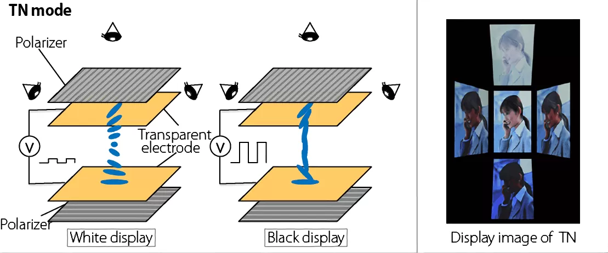
TN mód: bez napětí bílá, pod napětím černá; vpravo pozorovací úhly